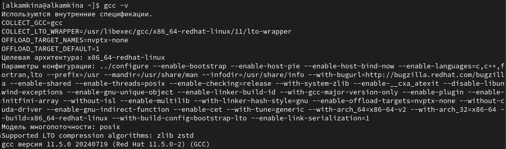
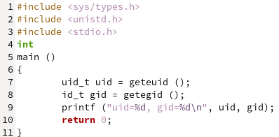
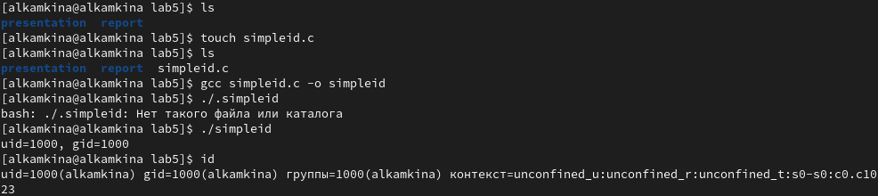
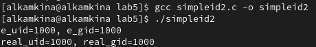
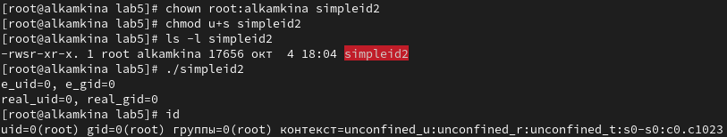
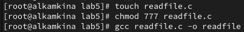
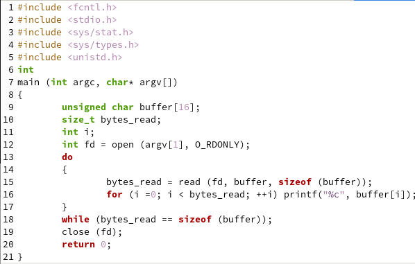
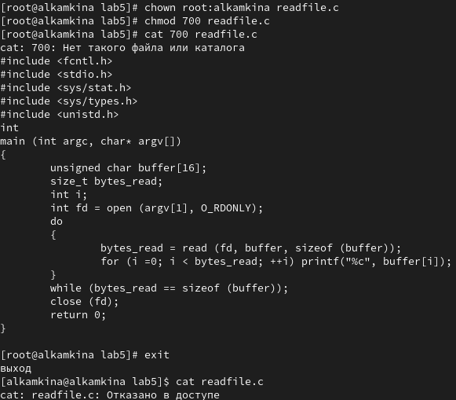
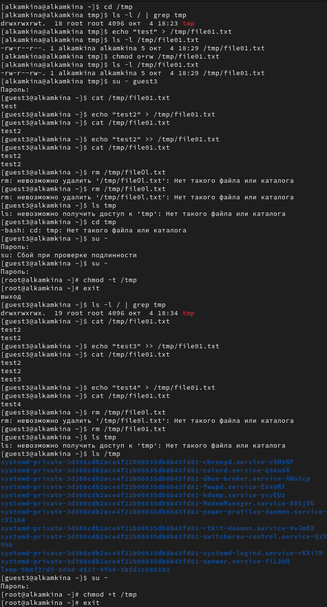

- Камкина Арина Леонидовна
- студентка группы НКНбд-01-21
- Российский университет дружбы народов
- 1032216456@pfur.ru
- https://alkamkina.github.io/ru/

| ## Front matter lang: ru-RU title: Лабораторная работа №5 subtitle: Дискреционное разграничение прав в Linux. Исследование влияния дополнительных атрибутов |
| author: - Камкина А. Л. institute: - Российский университет дружбы народов, Москва, Россия |
| ## i18n babel babel-lang: russian babel-otherlangs: english |
| ## Formatting pdf toc: false toc-title: Содержание slide_level: 2 aspectratio: 169 section-titles: true theme: metropolis header-includes: - - ‘’ - ‘’ - ‘’ |
Цель работы:
Изучение механизмов изменения идентификаторов, применения SetUID- и Sticky-битов. Получение практических навыков работы в консоли с дополнительными атрибутами. Рассмотрение работы механизма смены идентификатора процессов пользователей, а также влияние бита Sticky на запись и удаление файлов.
Задачи:
Инструмент: VirtualBox - CentOS, cmd
 { #fig:001 width=70% }
 { #fig:002 width=70% }
 { #fig:003 width=70% }
{ #fig:003 width=70% }
 { #fig:005 width=70% }
 { #fig:006 width=70% }
 { #fig:007 width=70% }
 { #fig:008 width=70% }
 { #fig:009 width=70% }
 { #fig:010 width=70% }
В результате выполнения работы я изучила механизмы изменения идентификаторов и применения SetUID- и Sticky-битов